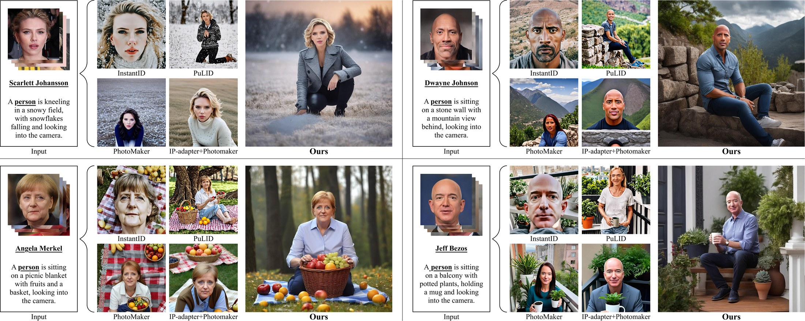
Identity-Preserving Personalized Generation (IPPG) has advanced film production and artistic creation, yet existing approaches overemphasize facial regions — resulting in outputs dominated by facial close-ups. These methods suffer from weak visual narrativity and poor semantic consistency under complex text prompts, rooted in identity (ID) feature embeddings that undermine the semantic expressiveness of generative models.
To address these issues, we present an IPPG method that breaks the constraint of facial close-ups, achieving synergistic optimization of identity fidelity and scene semantic creation. Specifically, we design a Dual-Line Inference (DLI) pipeline with identity-semantic separation, resolving the ID-semantics representation conflict in traditional single-path architectures. Further, we propose an Identity Adaptive Fusion (IdAF) strategy that defers ID-semantic fusion to the noise prediction stage, integrating adaptive attention fusion and noise masking to avoid ID embedding interference on semantics without manual masking. Finally, an Identity Aggregation Prepending (IdAP) module aggregates ID information in place of random initializations, further enhancing identity preservation.
Experimental results validate that our method achieves stable and effective performance in IPPG tasks beyond facial close-ups, enabling efficient generation without manual masking or fine-tuning. As a plug-and-play component, it can be rapidly deployed in existing IPPG frameworks, facilitating film-level character-scene creation and enriching personalized generation for related domains.
We trace the close-up collapse to a structural cause: in prevailing single-path pipelines, the identity embedding is injected into the same generation branch that carries the text semantics. Under the same random seed, injecting the ID embedding transforms an otherwise full-body, scene-rich image into a facial close-up — the ID signal overwrites the spatial and semantic layout that the prompt describes.
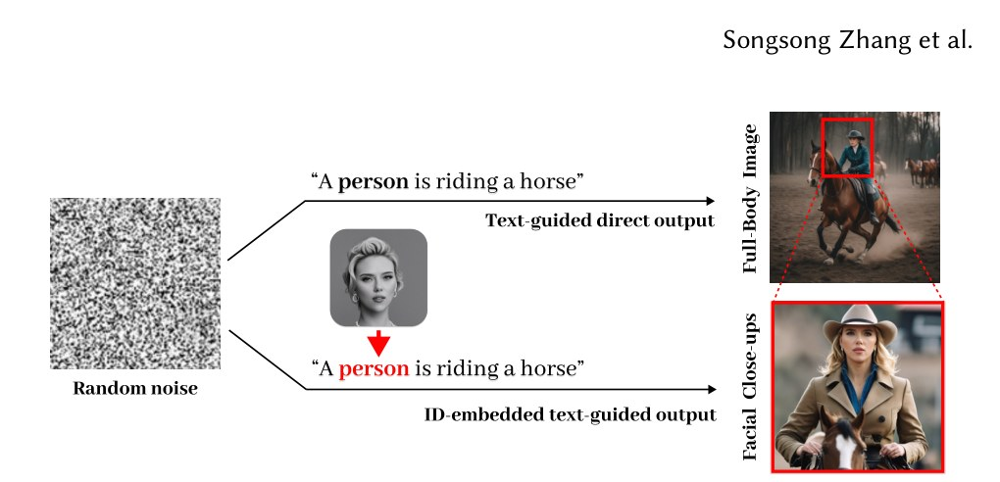
This observation motivates our core design principle: identity and semantics should travel on separate lines and only be fused where they cannot interfere — at the noise-prediction stage.
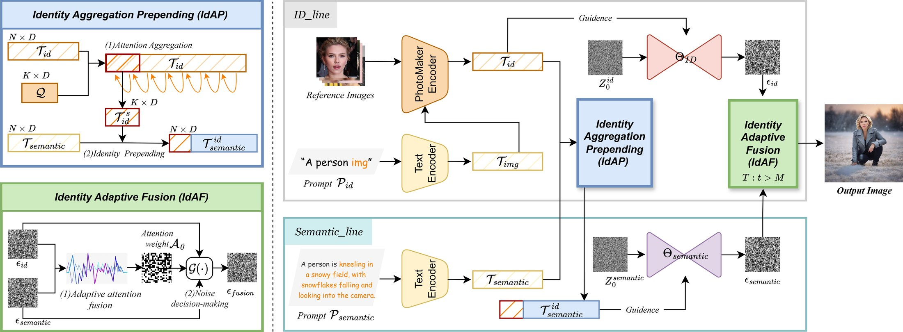
Instead of feeding text and identity through one entangled branch, DLI runs an identity line and a semantic line in parallel. The semantic line preserves the base T2I model's full compositional ability (scene, action, layout), while the identity line carries the facial ID signal. This separation resolves the ID–semantic representational conflict of single-path architectures and is the structural prerequisite for non-close-up generation.
IdAF defers the ID–semantic fusion to the noise-prediction stage. The identity attention map is adaptively scaled by a factor λ(i) and fused into the semantic attention output:
combined with noise masking that localizes where identity may be written. Fusion is activated only on the identity-relevant timesteps (see the IdAF activated-timestep analysis below), so the semantic layout is decided first and identity is injected afterwards — no manual face mask, bounding box, or inpainting step is ever required.
IdAP aggregates identity information and prepends it in place of the randomly initialized ID features used by prior work. This suppresses interference from irrelevant identities during semantic generation and measurably boosts identity fidelity (see ablations).
The entire pipeline is tuning-free and plug-and-play: it wraps an off-the-shelf IPPG backbone (e.g., PhotoMaker) at inference time, and transfers across backbones (see the InfiniteYou/DiT results below).
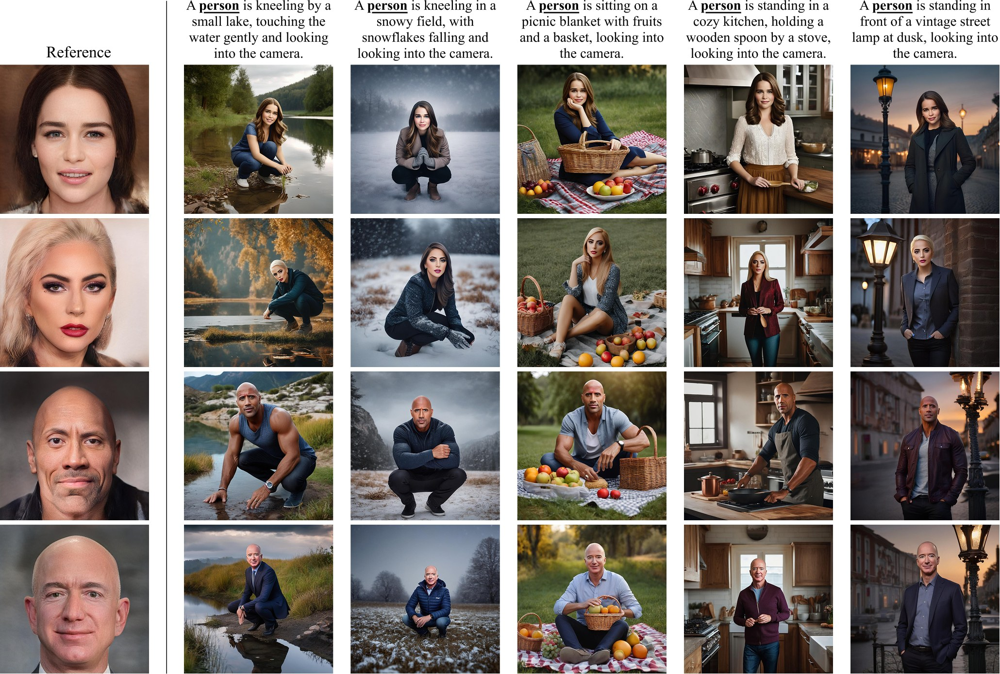
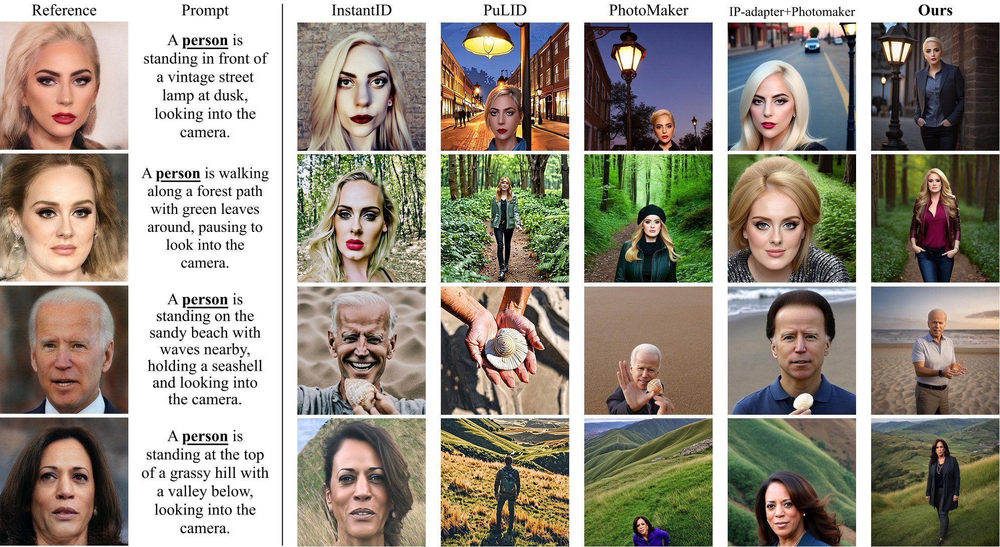
| Method | Face sim. (%) | DINO (%) | CLIP-I (%) | CLIP-T (%) | FID |
|---|---|---|---|---|---|
| PhotoMaker (Baseline) | 52.01 | 46.46 | 62.09 | 28.46 | 117.90 |
| PuLID | 57.07 | 47.14 | 52.94 | 32.33 | 134.03 |
| InstantID | 54.68 | 51.93 | 54.18 | 27.21 | 127.80 |
| IP-Adapter+PhotoMaker | 58.10 | 47.79 | 79.28 | 28.72 | 211.68 |
| BeyondFacial (Ours) | 58.67 | 51.24 | 64.87 | 31.47 | 54.62 |
Table 1. Main-set results. Ours achieves SOTA identity fidelity (Face sim. 58.67) with the best identity–semantic balance and by far the best image distribution quality (FID 54.62 vs. 117.90 baseline). High CLIP-I of IP-Adapter+PhotoMaker comes at the cost of close-up collapse and severe FID degradation.
| Method | Face sim. (%) | DINO (%) | CLIP-I (%) | CLIP-T (%) | FID |
|---|---|---|---|---|---|
| PhotoMaker | 28.90 | 9.95 | 39.25 | 29.22 | 375.87 |
| BeyondFacial (Ours) | 36.94 | 16.23 | 44.89 | 32.21 | 365.32 |
| Improvement | +8.04 | +6.28 | +5.64 | +2.99 | −10.55 |
Table 2. Extension-set results. Absolute scores are lower due to deliberately harder prompts, yet BeyondFacial maintains a comprehensive lead on every metric.
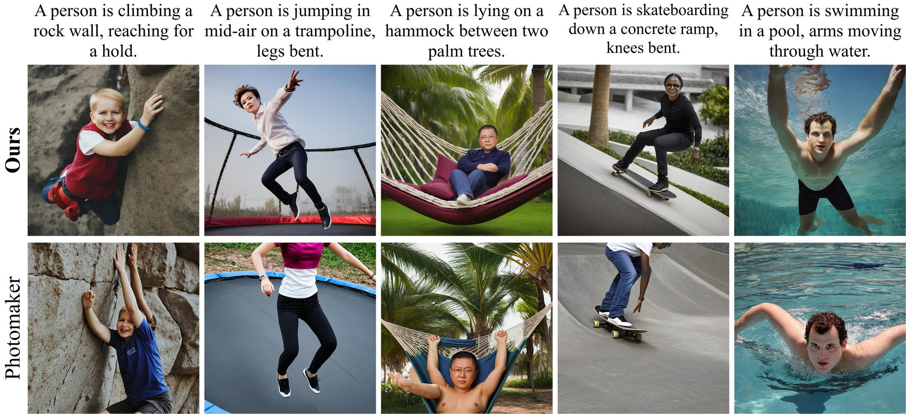
| Method | Identity similarity | Image-text alignment | Image quality & aesthetics | Scene & figure integrity | Average |
|---|---|---|---|---|---|
| InstantID | 50.89 | 48.06 | 47.20 | 49.35 | 48.88 |
| PhotoMaker | 47.95 | 60.85 | 56.89 | 60.50 | 56.55 |
| IP-Adapter+PhotoMaker | 63.58 | 48.45 | 53.35 | 52.51 | 54.47 |
| PuLID | 57.21 | 70.95 | 61.99 | 68.68 | 64.71 |
| Ours | 75.17 | 79.01 | 74.38 | 78.34 | 76.73 |
Table 3. User study. BeyondFacial leads on all four criteria, with an average score of 76.73.
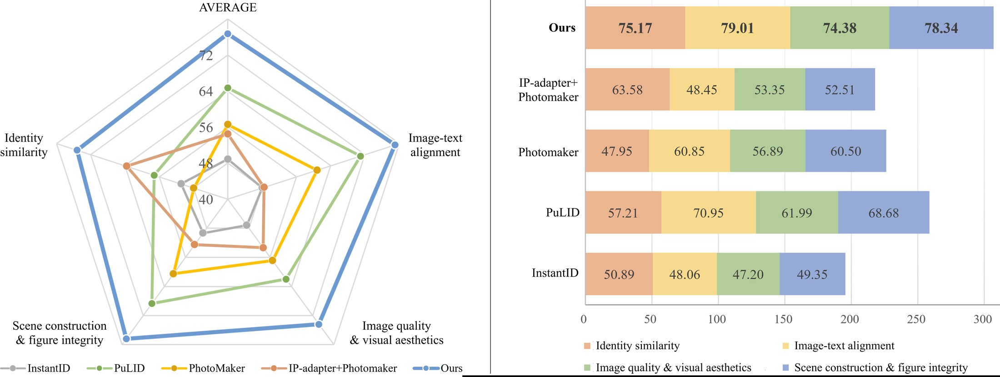
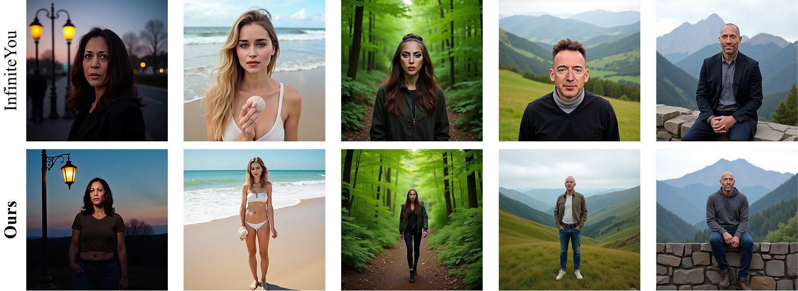
| Metric | PhotoMaker | BeyondFacial | BF (opt.) |
|---|---|---|---|
| Ttotal (s) | 6.56 | 12.91 | 15.98 |
| Mpeak (MB) | 10,388 | 17,123 | 11,539 |
| Bmax | 4 | 2 | 16 |
| Throughput (img/h) | 2,194 | 557 | 3,603 |
| vs. PhotoMaker | 1.00× | 0.25× | 1.64× |
Table 4. Efficiency comparison. BF (opt.) trades per-batch latency for near-baseline peak memory (+11%), 4× max batch size, and +64% throughput over PhotoMaker.
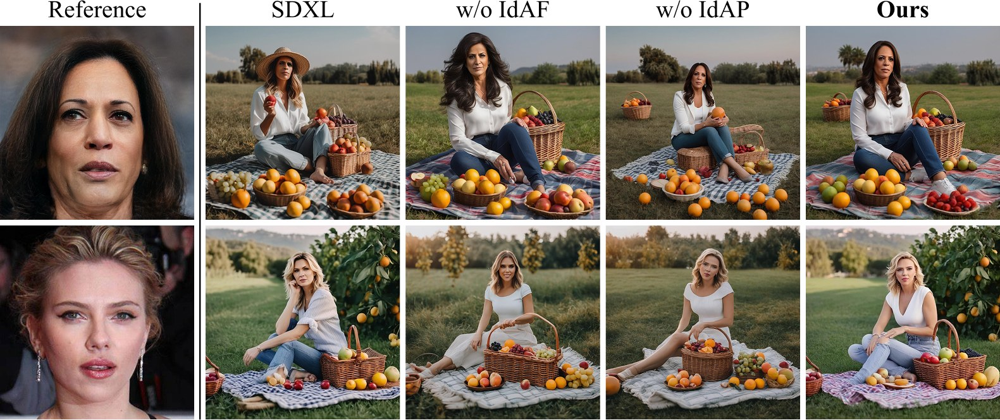
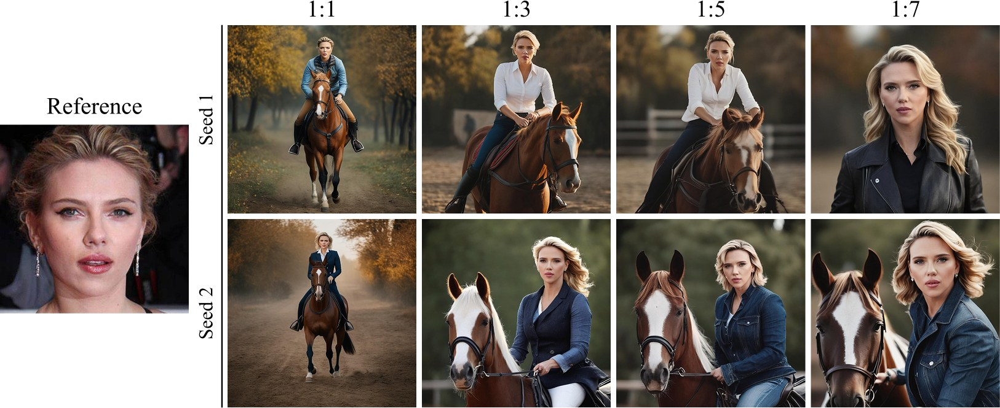
| Method | Face sim. (%) | DINO (%) | CLIP-I (%) | CLIP-T (%) |
|---|---|---|---|---|
| SDXL | — | 13.37 | 55.78 | 31.00 |
| Ours (w/o IdAF) | 36.34 | 45.58 | 57.27 | 30.97 |
| Ours (w/o IdAP) | 54.17 | 37.37 | 56.28 | 31.46 |
| Ours (Full) | 58.67 | 51.24 | 64.87 | 31.47 |
Table 5. Module ablation studies. Quantitative results reveal the individual impacts of IdAF and IdAP.
| Config | Description | No-face | Close-up | Full-fig. |
|---|---|---|---|---|
| M0 | Single-branch baseline | 0.030 | 0.000 | 0.185 |
| M1 | Single + IdAP (immediate) | 0.000 | 0.980 | 0.000 |
| M2 | Single + IdAP (deferred) | 0.000 | 0.985 | 0.000 |
| M3 | DLI + IdAF (w/o IdAP) | 0.045 | 0.115 | 0.520 |
| M4 | Full (DLI + IdAF + IdAP) | 0.020 | 0.070 | 0.575 |
Table 6. Close-up and full-figure rates under single-branch (M0–M2) and dual-line (M3–M4) architectures. Any single-branch variant collapses to close-ups (≥0.98); the dual-line design is what unlocks full-figure generation.
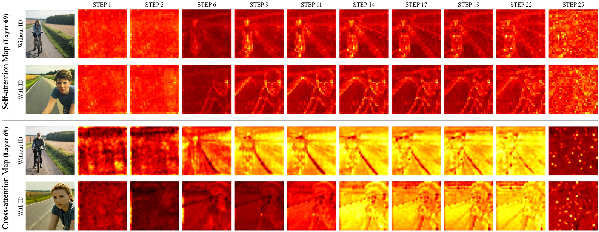
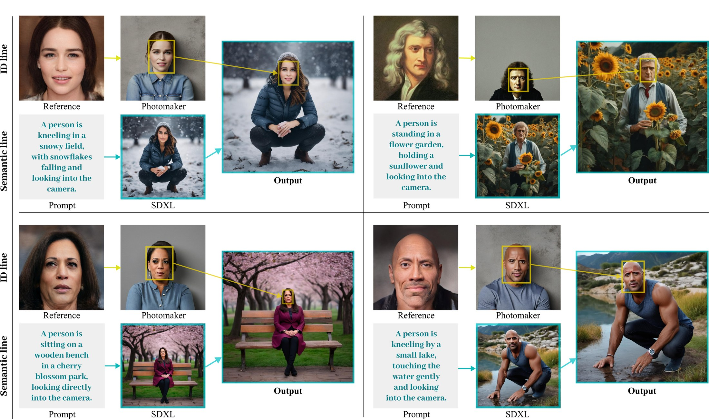
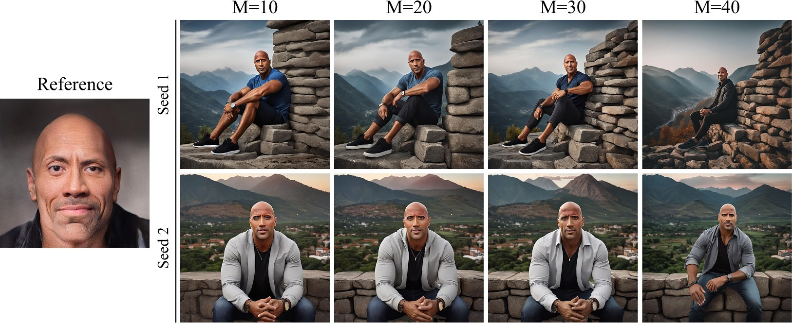
Beyond facial close-ups unlocks a family of downstream uses that require coherent character–scene generation rather than portrait crops.
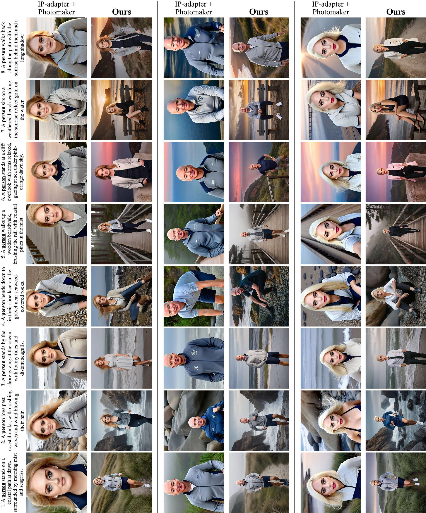
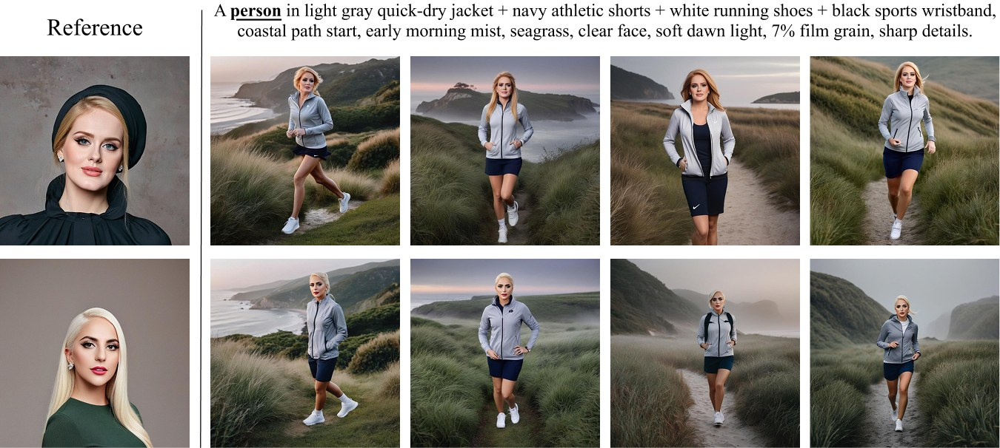
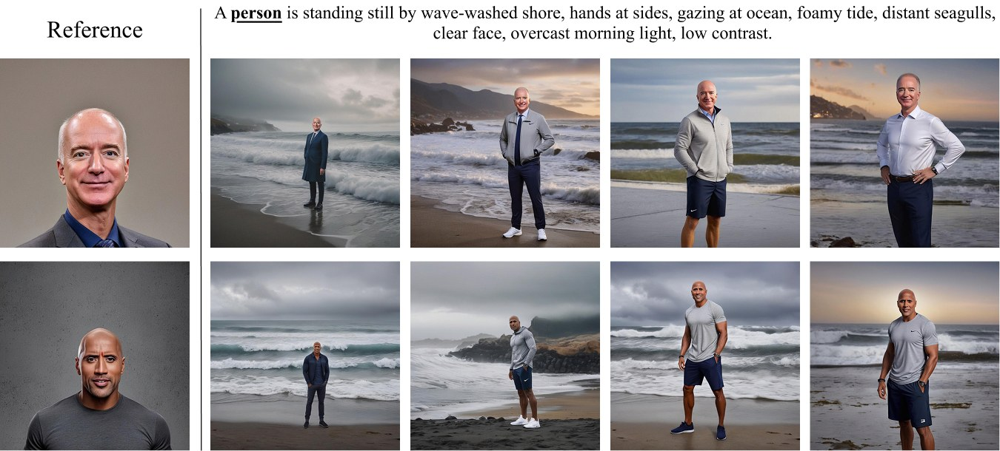
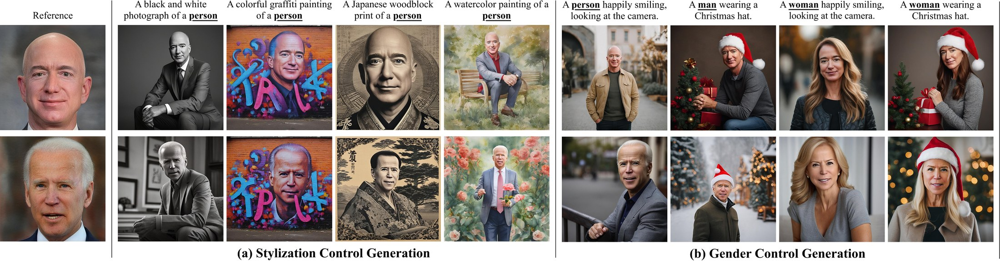
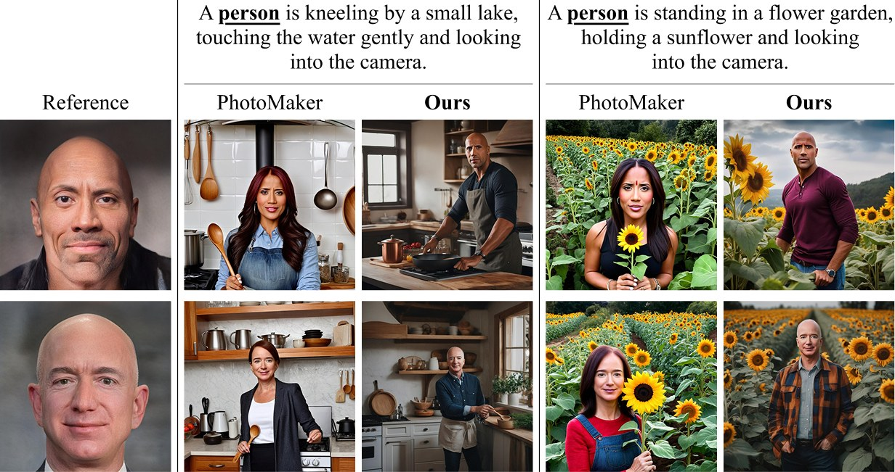
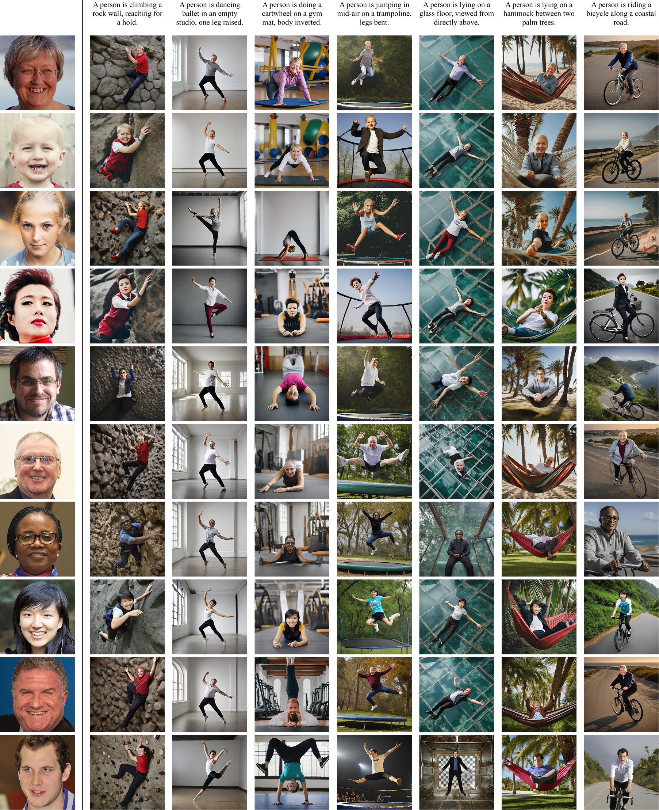
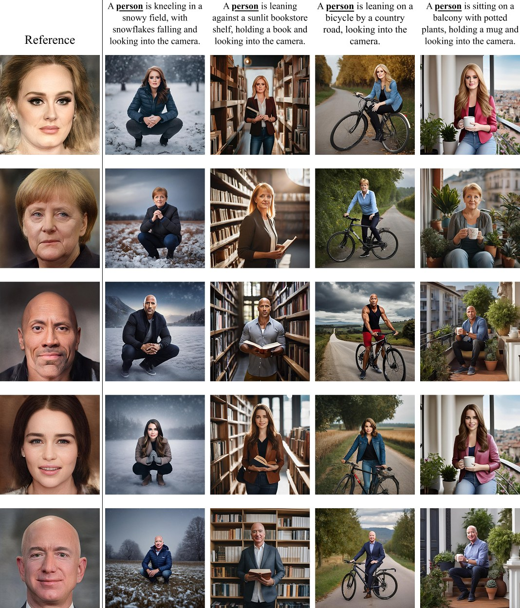
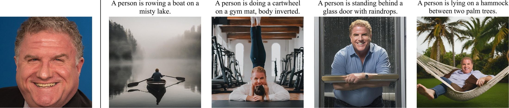
@inproceedings{zhang2026beyondfacial,
author = {Zhang, Songsong and Tang, Chuanqi and Li, Minglong and Li, Xueqiong and
Yang, Shaowu and Peng, Yuanxi and Yang, Wenjing and Zhao, Jing},
title = {BeyondFacial: Identity-Preserving Personalized Generation Beyond Facial Close-ups},
booktitle = {Proceedings of the 34th ACM International Conference on Multimedia (ACM MM)},
year = {2026},
publisher = {ACM},
doi = {10.1145/3767308.3836071}
}